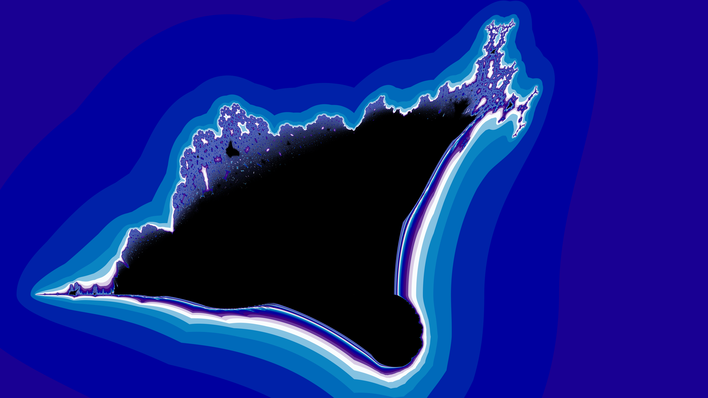

Abstract interfaces
Swapping fractal iterator functions on the fly in Fortran
2021 Dec 11
Fractal images are generated by calling an iterator function many times on the 2D coordinates c for each pixel in an image. Colors in the image are assigned depending on how many iterations it takes for a point to escape beyond a certain radius, if it escapes at all.
Two common fractals are the Mandelbrot set and the burning ship fractal (figures from wikipedia):
 |
 |
| Figure 1a: the Mandelbrot set | Figure 1b: the burning ship fractal |
In the black areas, the iterator function stays finite, while in the color-shaded areas it escapes to infinity at various speeds.
The only difference between these fractals is the iterator function. For the Mandelbrot set, the iterator function is (wikipedia):
| (1) |
while for the burning ship, it is:
| (2) |
with the initial condition z1 = c.
Under the hood, pretty much everything about a program that creates a fractal image is the same as another program, regardless of the choice of fractal iterator function.
Thus, in accordance with the DRY principle, it makes sense to have a single program that can create fractal images for any iterator function, with as little redundancy as reasonable.
Now we are faced with a problem of how to swap out one iterator function for another at runtime. A user may choose to define the iterator function either as Equation (1) or as Equation (2). How can we set the function in a DRY and computationally efficient way?
The solution is abstract interfaces, procedure pointers, and callbacks.
Abstract interfaces
As a first step, let’s define the iterator functions from Equations (1) and (2) in Fortran:
!=======================================================================
double complex function fmandelbrot(z, c)
double complex :: z, c
fmandelbrot = z ** 2 + c
end function fmandelbrot
!=======================================================================
double complex function fship(z, c)
! Burning ship
double complex :: z, c
fship = complex(abs(realpart(z)), abs(imagpart(z))) ** 2 + c
end function fship
!=======================================================================Recall that in Fortran, the two-word keyword double complex means a 2D (i.e. complex) number with each component having double the precision as a C float.
Notice any similarities in the functions? Aside from having similar equations of the form z = y ** 2 + c (where the y term may or may not get an abs() workout), these functions have the same exact signature. That is, fmandelbrot and fship both have the same numbers of input arguments and output arguments, and the arguments are of the same types. In this case, they have:
- 2 input arguments
zandc - 1 output argument (named after the respective function)
- all arguments are of the
double complextype
Let’s formalize this signature by defining an abstract interface for the iterator functions:
abstract interface
double complex function itr_func_interface(z, c)
double complex :: z, c
end function itr_func_interface
end interfaceAfter all, the compiler will need to know the interface before we can pass the function as a callback or swap out a function pointer for one function or another. The abstract interface is how we define this function signature for the compiler.
Note that the name itr_func_interface and the arguments z and c in the abstract interface are all dummies. Their names don’t matter, the arguments just have to match in number and type.
Callbacks and procedure pointers
Next, let’s define a higher-level function that counts the number of iterations that it takes for a point c to escape, with a given iterator function f:
integer function nitrescape(c, maxitr, escape, f)
double complex, intent(in) :: c
integer, intent(in) :: maxitr
double precision, intent(in) :: escape
procedure(itr_func_interface), pointer :: f
double complex :: z
z = c
nitrescape = 0
do while (nitrescape < maxitr .and. abs(z) < escape)
nitrescape = nitrescape + 1
z = f(z, c)
end do
end function nitrescapeThe function f, passed to nitrescape from outside, is a callback. Its definition is determined at runtime, not compile time. In our case, it could be either the Mandelbrot or the burning ship iterator function. All that is known at compile time is that f has the same function signature as itr_func_interface from the abstract interface.
There is a halting condition maxitr to stop infinite loops for points that don’t escape. The choice of max iterations and escape radius is somewhat arbitrary, but it’s a tradeoff between the quality of the image that you want and how patient you are.
I suppose nitrescape doesn’t really need to be a function and it could just be in the main block of the program instead, but it’s nice to encapsulate things sometimes and this gives us an excuse to demonstrate callbacks and procedure pointers.
The return value from nitrescape will be used to color the image according to some linear color map like HSV.
It’s all coming together
Finally, let’s put it all together in a top-level subroutine, where the user can choose the iterator function by entering an integer ID ifractal:
subroutine fractal
integer :: ifractal, ix, iy, nx, ny, maxitr
procedure(itr_func_interface), pointer :: fiterator
double precision :: escape
double precision, allocatable :: x(:), y(:)
write(*,*) 'Enter fractal iterator function (1 for Mandelbrot or 2 for burning ship):'
read(*,*) ifractal
! [read other inputs, initialize data, set x, y, etc.]
if (ifractal == 1) then
fiterator => fmandelbrot
else
fiterator => fship
end if
! Space loops over x/y pixel coordinates
do iy = 1, ny
do ix = 1, nx
! Vectors x and y contain pixel coordinates
nitr = nitrescape(complex(x(ix), y(iy)), maxitr, escape, fiterator)
! [set colors from nitr, save pixel data in memory, and write image to disk]
end do
end do
end subroutine fractalThe function fiterator is a procedure pointer. Just like f, there is no actual function named fiterator. It only points to another function like fmandelbrot or fship, which is chosen at runtime by the user. The pointer is assigned to an actual function with the => operator. Recall that procedure is the generic Fortran term for either a function (with a return value) or a subroutine (void return value).
In this application, the pointer is set to an actual function once at initialization and left as that function for the duration of the program’s run. If your application requires it, the pointer could be swapped to another function later.
Other applications of these techniques could include anything involving a function of functions. Two classical examples would be evaluating derivatives or definite integrals, probably numerically. The functions being derived or integrated are the lower-level functions, while the function that evaluates the derivative at a point or an integral over a range is the higher-level function. The lower-level functions just need to share the same abstract interface, e.g. all functions of a single real variable, or all functions of two real variables.
The full fractal program is here.
Discussion
It’s worth noting some other (i.e. wrong) approaches that could be used for this particular problem.
Condition inside loop
The if/else condition that chooses the fractal iterator could be moved inside the loop:
! Space loops over x/y pixel coordinates
do iy = 1, ny
do ix = 1, nx
if (ifractal == 1) then
nitr = nitrescape(complex(x(ix), y(iy)), maxitr, escape, fmandelbrot)
else
nitr = nitrescape(complex(x(ix), y(iy)), maxitr, escape, fship)
end if
end do
end doThis doesn’t require procedure pointers, just an external function passed to nitrescape. However, adding conditional branches inside big loops can have significant performance disadvantages. And this is a very big loop, going through literally millions of executions for an image with a resolution in the megapixels. There is also a time loop outside the space loop that zooms in frame-by-frame, so that could be way too slow.
However, this is the way I did it at first before I fixed a parallelization bug.
Benchmarks are left as an exercise to the reader. I don’t always follow my own advice on side projects, so there is a lot of branching image-format logic inside the loop. It’s best to disable that and all other extraneous things before benchmarking the core fractal code.
Copied loops
To avoid the performance disadvantage from putting the condition inside the loop, you can copy the whole loop. Obviously this is dripping WET and hard to maintain:
if (ifractal == 1) then
! Space loops over x/y pixel coordinates
do iy = 1, ny
do ix = 1, nx
nitr = nitrescape(complex(x(ix), y(iy)), maxitr, escape, fmandelbrot)
! [set colors from nitr, save pixel data in memory, and write image to disk]
end do
end do
else
! Space loops over x/y pixel coordinates
do iy = 1, ny
do ix = 1, nx
nitr = nitrescape(complex(x(ix), y(iy)), maxitr, escape, fship)
! [set colors from nitr, save pixel data in memory, and write image to disk]
end do
end do
end ifThese nearly-identical loops become very difficult to maintain, especially with all the code omitted between brackets [], and moreso if there are more than 2 possible iterator functions.